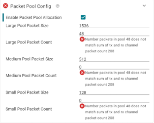
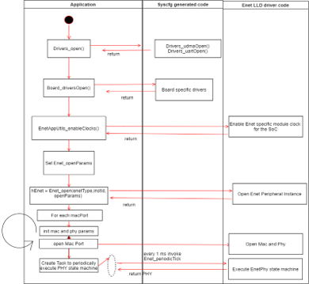
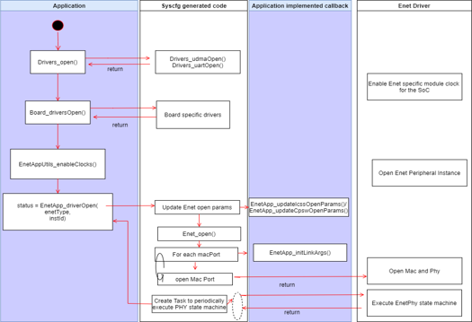
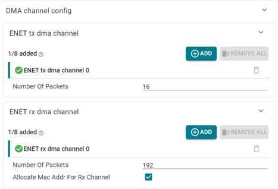
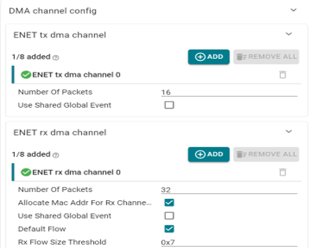
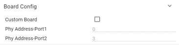
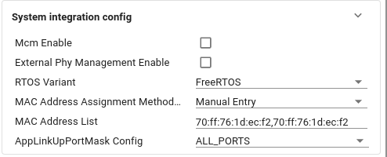
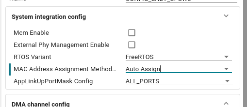
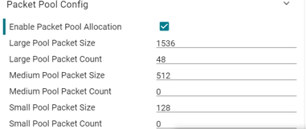

Introduction
Enet LLD Migration guide explains the rationale for syscfg integration and the associated changes needed in application
Back To Top
Need for sysconfig
Enet LLD enables syscfg based module configuration. This impacts application using enet driver that are migrating from previous releases. The rationale for deep sysconfig integration with enet driver is listed:
- The Enet LLD driver contains core specific, board specific code. However in MCU+SDK all module libraries can only be SOC+ISA specific. There is no option to have core specific or board specific options when building a library. This required user of enet library to modify enet source code that is not built for the default core/board combo and recompile the enet library. This issue has been addressed by ensuring portions that are core or board specific are part of syscfg template that are compiled as part of application
- Migrating open params of a module from C based to Sysconfig generated has other advantages:
- Range check for all values at config time instead of runtime parameter checks
- This reduces code size on target by eliminating error checks and minimizes erroneous configuration
- Validation checks based on external module configuration like Clock config
- Avoid uninitialized members in open params structure
- Syscfg generated code will correctly initialize all members of openParams.
- Allows easier migration to new versions and maintain backward compatibility without requiring application code change.
- Although the same is typically done in C code by means of Enet_InitCfg API, the syscfg approach reduces target side code and ensure member initialization even if app fails to invoke Enet_InitCfg API
- Allows creation of external module instances needed by enet lld without requiring application integrator to understand enet module external dependency. This simplifies system integration and reduces errors
- UDMA instance is created as shared instance by Enet Module
- I2C instances needed for board config can be created as shared instance by Enet Module
- PRU instance interrupt configuration for ICSSG can be done by Enet Syscfg Module
- Allows sizing of data structures in enet driver based on application config
- The number of tx dma channels, rx dma channels, number of enet phy instances, enet resource manager configuration, number of packet buffers etc can be sized correctly based on application usecase rather than sizing them for a worst case if their allocation is determined by syscfg configuration
- Enet LLD Driver library is built with close to zero r/w memory footprint
- All data structures needed by EnetLLD drivers are sysconfig generated and sized correctly
- For example : Enet_memInit (Enet LLD function) invokes Enet_memGetCfg (Sysconfig generated code) which returns data structure with number of packets, rings, desc and associated memory that is generated based on application configuration and is right sized
- Syscfg GUI allows presenting options in a scalable manner , showing only relevant options based on config and enables descriptive error msgs for wrong configuration.
- Example of using syscfg GUI to scalably present config options:
- If Enable Packet Pool Allocation option is not selected none of the other packet pool configuration options which are irrelevant are presented to the user {html: width=50%}
- If Enable Packet Pool Allocation option is enabled the other packet pool configuration options are presented to the user  {html: width=50%}
Back To Top
Enet Driver Initialization Sequence Change
Impact: The init sequence change impacts both ICSSG and CPSW peripherals on all SoCs
| Old Init Sequence | New Init Sequence |
|  {html: width=50%} |  {html: width=50%} |
| 1.Set default enet osal configuration: Enet_initOsalCfg() | 1.Implement function EnetApp_updateCpswOpenParams() or EnetApp_updateIcssgOpenParams() depending on peripheral type
This function allows application to set any Enet openParams as per application requirement |
| 2.Set default enet utils configuration: Enet_initUtilsCfg() | 2.Implement function EnetApp_initLinkArgs which allows application to set mac and phy params for each macPort enabled |
| 3.Init Enet: Enet_init(osalCfg, utilsCfg) | 3.Invoke EnetApp_driverOpen(enetType,instId)
return value of EnetApp_driverOpen is status indicating success/failure |
| 4.Set default Enet_openParams Enet_initCfg() | 4.Application can get handle to Enet driver by invoking EnetApp_acquirehandleInfo() function |
| 5.Update Enet open params with app specific configuration | |
| 6.Invoke Enet_open and get handle to Enet driver: hEnet = Enet_open(..openParams) | |
7.For each macPort
Init mac and phy link params
Open macPort | |
| 8.Create PHY state machine task which will periodically invoke Enet_periodicTick | |
| txsg_test_initseq_original.c | txsg_test_initseq_modified.c |
Note: If image is not clear please save the png image and zoom
Compare txsg_test_initseq_original.c vs txsg_test_initseq_modified.c in a source code comparison tool to see the differences
Back To Top
Enet DMA channel open changes
Impact: The DMA channel open change impacts both ICSSG and CPSW peripherals on all SoCs
- Only applications directly invoke Enet driver packet transmit and receive APIs are impacted
- LWIP based applications are not impacted
The EnetDma_openRxCh() and EnetDma_openTxCh() DMA channel open was previously application callable APIs Applications typically use EnetAppUtils wrapper APIs to open Tx and Rx DMA channels
- EnetAppUtils_openTxCh()
- EnetAppUtils_openRxCh()
- EnetAppUtils_openRxFlow()
- EnetAppUtils_openRxFlowForChIdx()
Supporting application invocable APIs for Tx and Rx DMA channel open required enet driver to support worst case number for Tx and Rx channels and associated rings,descriptors irrespective of actual number of channels used by application
Most application typically use 1 Tx and 1 Rx channel but the default enet library was built to support upto 8 Tx and 8 Rx channels resulting in wastage of memory
To ensure the DMA channel and associated rings are sized to correct value based on application usecase, DMA channel configuration is now supported via syscfg
| Sysconfig DMA channel config for AM263x/AWR294x/AM273x | Sysconfig DMA channel config for AM243x_AM64x |
|  {html: width=50%} |  {html: width=50%} |
All application configurable DMA channels open params that were configurable via APIs EnetAppUtils_openTxCh/ EnetAppUtils_openRxCh are now configurable via syscfg GUI
- One Tx and Rx channel are created by default
- If application needs additional Tx and Rx channels it should instantiate additional channels via syscfg
- Refer mcu_plus_sdk/examples/networking/enet_layer2_multi_channel/<soc-platform>/r5fss0-0_freertos/example.syscfg
The syscfg generated EnetApp_driverOpen function internally opens all configured DMA channels.
- Application can no longer opens DMA channels.
Application gets handle to DMA channel by passing the DMA channel instance identifier used in example.syscfg
- enet_cpsw1.txDmaChannel[0].$name = "ENET_DMA_TX_CH0" /* Instance identified for Tx Dma channel 0 */
- enet_cpsw1.rxDmaChannel[0].$name = "ENET_DMA_RX_CH0" /* Instance identified for Rx Dma channel 0 */
To get DMA channel handle application invokes
- EnetApp_getTxDmaHandle(ENET_DMA_TX_CH0, &txInArgs, &txChInfo);
- EnetApp_getRxDmaHandle(ENET_DMA_RX_CH0, &rxInArgs, &rxChInfo);
Compare txsg_test_dma_original.c vs txsg_test_dma_modified.c in a source code comparison tool to see the differences
Back To Top
Runtime Control API (Enet_ioctl) change
Impact: The init sequence change impacts both ICSSG and CPSW peripherals on all SoCs
Rationale for change:
- Runtime control for Enet driver is supported via Enet_ioctl API call
- The Enet_ioctl API takes a CMD and associated params
- Internally the Enet_ioctl was implemented as a switch..case statement .
- As all supported IOCTL cmds are implemented as a case statement, the linker will link in code associated with all supported IOCTLs cmd (~300 cmd) irrespective of whether the IOCTL cmd was invoked by application.
- This results in large code size in the final application even though the application may not be using all the IOCTL cmds.
- To resolve this issue, the Enet library has been modified to move to a model that ensures only IOCTL cmds invoked by application are linked into the final executable
| Old Enet_ioctl invocation method | New Enet_ioctl invocation method |
| status = Enet_ioctl(hEnet, coreId, IOCTL_CMD, &ioctlPrms); | ENET_IOCTL(hEnet, coreId, IOCTL_CMD, &prms, ioctlReturnStatus);
ENET_IOCTL is a macro that first registers the handler function for the IOCTL cmd and then invokes the actual Enet_ioctl API.
This allows linker to link in only IOCTLs used by application into the executable |
Note Do not invoke Enet_ioctl API directly from application.
- It should result in compilation error due to missing prototype unless application is wrongly including some enet private header files.
- If Enet_ioctl API is invoked directly you will get a cmd failure
- The IOCTL_CMD has to be a ENET_IOCTL cmd enum and cannot be a variable.
- You will face linker error about undefined symbol if you use variable instead of enum for the IOCTL cmd param
Compare txsg_test_ioctl_original.c vs txsg_test_ioctl_modified.c in a source code comparison tool to see the differences
Back To Top
Packet Transmit/Receive API related changes
Scatter Gather list related change
Impact: The Scatter Gather list change impacts CPSW peripherals on AM263x/AM273x/AWR294x
- Only applications directly invoke Enet driver packet EnetDma_submitTxPktQ() transmit APIs are impacted
- LWIP based applications are not impacted
Rationale for change:
- Support for transmit packets to be a scatter-gather list instead of a single contiguous packet has been added in SDK 8.2 release.
- Enabling scatter gather for Tx packets allows zero-copy packet transmission in lwip stack improving transmit throughput
EnetDma_Pkt is the packet structure passed to EnetDma_submitTxPktQ (packet transmit) and EnetDma_retrieveRxPktQ (packet receive API)
- This structure is modified to support scatter gather.
- Application should invoke EnetDma_initPktInfo API to initialize EnetDma_Pkt structure to default values
- If application does not use tx scatter gather feature for packet transmission it should set
- EnetDma_Pkt.bufPtrFilledLen = EnetDma_Pkt.txTotalPktLen = length of tx packet
- If application uses the tx scatter gather feature please refer API documentation of EnetDma_Pkt and refer mcu_plus_sdk/examples/networking/enet_tx_scatter_gather/txsg_test.c for example usage
DisableCacheOps related change
Impact: The disableCacheOps change impacts CPSW peripherals on AM263x/AM273x/AWR294x
- Applications directly invoke Enet driver packet EnetDma_submitTxPktQ() transmit APIs are impacted
- UDP based LWIP applications are impacted
Rationale for change:
- By default Enet driver will perform cache coherency operation on packet before submitting to enet DMA engine for packet transmission.
- As a performance optimization application may not want the cache coherency operation to be performed on the packet payload by driver as the packet payload may not have been accessed by CPU (generated by HWA engine) or application may have handled the cache coherency operation on the payload itself
If application is non-lwip based and application does not want to use this feature, it should invoke EnetDma_initPktInfo() API to initialize EnetDma_Pkt structure to default values where EnetDma_Pkt.disableCacheOps is set to FALSE for packets to be transmitted. It can then update rest of the fields in EnetDma_initPktInfo to required values.
If application is lwip based based and UDP packets are transmitted, application should perform cache coherency operation on payload before submitting the packet for transmission. This is because zero copy is enabled for UDP packet transmission and cache operation in driver are disabled for UDP payload portions.
- Refer mcu_plus_sdk/examples/networking/lwip/enet_lwip_cpsw/udp_iperf.c: CacheP_wbInv function call for illustrative usage
Checksum offload related change
Impact: The checksum offload change impacts CPSW peripheral based applications on AM263x
- Only applications directly invoke Enet driver packet EnetDma_submitTxPktQ() transmit APIs are impacted
- LWIP based applications are not impacted
Rationale for change:
- CPSW peripheral supports computation of UDP and TCP checksum in hardware. This feature is called checksum offload and is enabled in SDK 8.4 release for AM263x This feature requires addition of a new EnetDma_Pkt.chkSumInfo field in EnetDma_Pkt
EnetDma_Pkt is the packet structure passed to EnetDma_submitTxPktQ (packet transmit) and EnetDma_retrieveRxPktQ (packet receive API) As this structure is modified to support checksum offload by adding chkSumInfo , chkSumInfo should be initialized correctly by application
For application that directly invoke Enet driver packet transmit and receive APIs the application should set EnetDma_Pkt.chkSumInfo = 0 This will ensure the CPSW checksum offload feature is not exercised wrongly
Back To Top
Custom Board Support
The MCU+SDK enet driver supports a set of boards for each SoC out of the box
- Refer MCU+SDK release notes for platforms/board supported for each SoC
The board specific portion of the enet code is auto generated in the file ti_board_config.c for supported boards
For porting enet based applications to custom board the following need to be done: Enable "Custom Board" syscfg option

- Enabling “Custom Board” will prevent auto generation of board specific code.
- A C file will have to be then written that is specific to the board.
Board config C file
The board specific file should contain the following
- const EnetPhy_DrvInfoTbl gEnetPhyDrvTbl: This is a table of ENET PHY drivers supported on the board. Refer Enet custom PHY integration guide for details on how to populate this table Ethernet PHY Integration Guide
- EnetBoard_setupPorts(): This function should setup any board level muxes and configure any SoC level RGMII internal delay/ RMII configuration for the specific port.
- Refer API documentation for mcu_plus_sdk/source/networking/enet/utils/include/enet_board.h for details of function and arguments
- EnetBoard_getPhyCfg(): This function should return the ETHPHY specific configuration for a given port including any extended phy configuration
- Refer API documentation for mcu_plus_sdk/source/networking/enet/utils/include/enet_board.h for details of function and arguments
- EnetBoard_getMacAddrList(): This function should populate any board specific MAC addresses that are available on board eeprom. If the board does not have any board specific macAddresses this function should set argument
*pAvailMacEntries = 0
- EnetBoard_getId(): This function should return the board id. This is not used anywhere outside this file so the board id returned will depend on the implementation of EnetBoard_setupPorts()/EnetBoard_getPhyCfg() for the custom board if it refers the boardId to determine PHY config/setup ports.
- Refer mcu_plus_sdk/examples/networking/enet_layer2_multi_channel
- enet_custom_board_config.c for example illustrating custom board integration
Ethernet MAC address Management
Typically, one unique MAC address in burnt into efuse during device fabrication. Furthermore, additional MAC addresses are programmed in EEPROM on evaluation boards (EVM and launchpads) that are supported by TI.
There are two ways by which you can set the custom MAC address.
1. Using Syscfg GUI tool
An option is provided in Syscfg GUI tool to force custom MAC address instead of taking from EEPROM/EFUSE.
To use this option: +Oopen syscfg GUI tool.
- Go to "TI"->"ENET(CPSW)" (or "ENET(ICSS)")->"System integration config".
- Change "MAC Address Assignment Method" to "Manual Entry" and fill the mac address in "MAC Address List" option.

- Keeping "MAC Address Assignment Method" to "Auto Assign", shall use the MAC address from EEPROM and EFUSE.

Please note that"Auto Assign" is not supported on AM273x and AWR294x due to EVM limitation.
2. Using Custom Board Option
On your custom board EEPROM may not be available or it is not used to keep MAC address, then please follow below steps to set MAC address-
- Select custom board as per previous section
- In your specific custom board specific .c file (eg.: enet_custom_board_config.c), refer to funtion
s() implementation as below-
void EnetBoard_getMacAddrList(uint8_t macAddr[][ENET_MAC_ADDR_LEN],
uint32_t maxMacEntries,
uint32_t *pAvailMacEntries)
{
int32_t status = ENET_SOK;
uint32_t macAddrCnt;
uint32_t i;
uint8_t macAddrBuf[ENET_BOARD_NUM_MACADDR_MAX * ENET_MAC_ADDR_LEN];
uint8_t numMacMax = 0;
/* Fill the MAC Address */
macAddrBuf[ENET_MAC_ADDR_LEN*0] = {0xF4, 0x84, 0x4C, 0xFB, 0xC0, 0x5C};
macAddrBuf[ENET_MAC_ADDR_LEN*1] = {0xF4, 0x84, 0x4C, 0xFB, 0xC0, 0x5D};
numMacMax = 2;
macAddrCnt = EnetUtils_min(numMacMax, maxMacEntries);
EnetAppUtils_assert(pAvailMacEntries != NULL);
for (i = 0U; i < macAddrCnt; i++)
{
memcpy(macAddr[i], &macAddrBuf[i * ENET_MAC_ADDR_LEN], ENET_MAC_ADDR_LEN);
}
*pAvailMacEntries = macAddrCnt;
if (macAddrCnt == 0U)
{
EnetAppUtils_print("EnetBoard_getMacAddrList Failed - IDK not present\n");
EnetAppUtils_assert(false);
}
}
Back To Top
External PHY management
External PHY management allows application plugging in its own PHY state machine and manage PHY drivers outside of Enet LLD
- PHY control and PHY statemachine handling is disabled in Ethernet driver
- MDIO is still owned by Ethernet Driver and MDIO IOCTLs should be used to access the PHYs
- mcu_plus_sdk/examples/networking/lwip/enet_lwip_cpsw/extPhyMgmt/enetextphy_phymdio_dflt.c
- External PHY management is enabled via syscfg option {html: width=50%}
- Application should register for MDIO link event interrupt if MDIO manual mode is not enabled
- Application should create a periodic polling task to check link state if MDIO manual mode is enabled
- This is because MDIO link event interrupt is not supported in MDIO manual mode (bitbanging mode)
- Application should invoke below IOCTLs to inform Enet driver of link up/down events
- ENET_PER_IOCTL_HANDLE_EXTPHY_LINKUP_EVENT
- ENET_PER_IOCTL_HANDLE_EXTPHY_LINKDOWN_EVENT
- Refer example application for extphy demonstration
- mcu_plus_sdk/examples/networking/lwip/enet_lwip_cpsw
Note: The external PHY sample example does not implement a real state m/c. Intention is to show Enet driver interaction with externally managed PHY and not implement a full featured external PHY
Back To Top
Tuning memory usage of enet driver for non-lwip apps
Syscfg integration allows the enet driver rwdata memory footprint to be sized based on application configuration Key params that are useful for tuning the rw data memory are
- Maximum number of packets for Tx and Rx Dma channel. This is configurable via syscfg
- For non-lwip application , the enet library packet pool allocation can be enabled
- On enabling Packet Pool allocation ,the application can configure the size of large,medium and small pools and the number of packets in each pool
-  {html: width=50%}
Back To Top
Tuning memory usage of enet driver for lwip apps
This release does not support similar syscfg based configuration of packet pools for lwip based examples. This will be addressed in the future releases. In the current release for lwip based application to tune memory the following option exists
- Set maximum number of packets for Tx and Rx Dma channel. This is configurable via syscfg
- Update mcu_plus_sdk/source/networking/lwip/lwip-config/
<soc>/lwippools.h as per application requirement
- Update mcu_plus_sdk/source/networking/lwip/lwip-config/
<soc>/lwipopts.h
- PBUF_POOL_SIZE : This determines number of Rx packets.
- The Rx Dma channel max number of packets should be updated if this value is modified
- Changes to lwipopts.h and lwippools require recompilation of library
- gmake -s -f makefile.
<soc> libs-scrub #Clean all libraries
- gmake -s -f makefile.
<soc> libs PROFILE:=debug/release #Rebuild all libraries
Back To Top
Compatibilty Breaks During MCU+ SDK Version Update
Updating to version 10.00
MCU PLUS SDK Version Updating from 09.02 or earlier the latest
 1.8.20
1.8.20